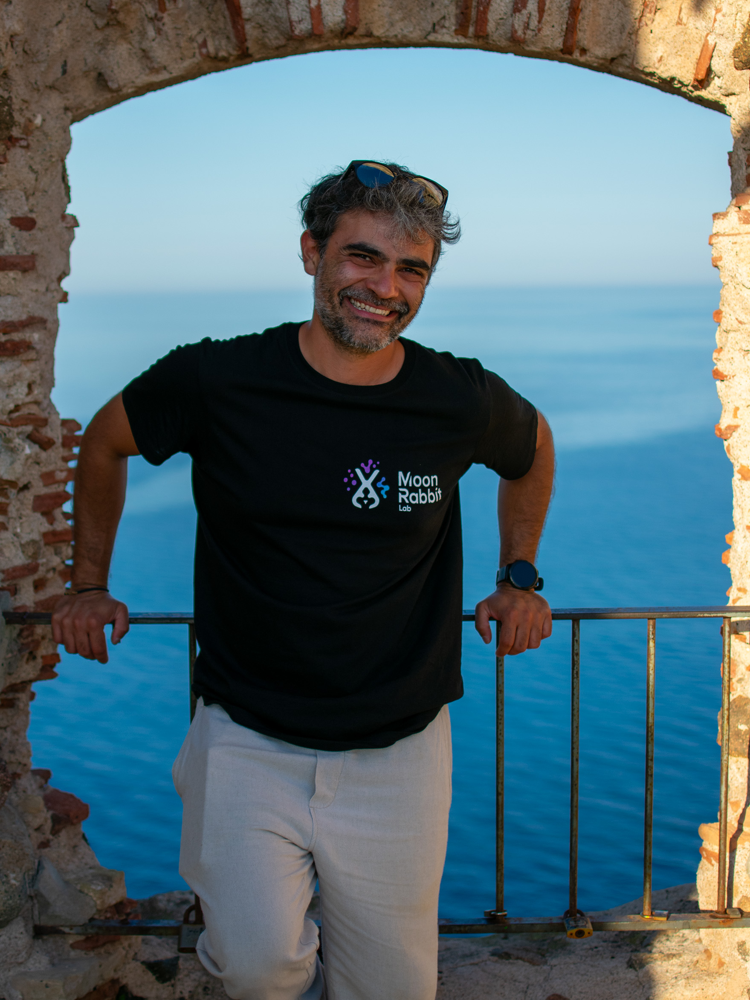
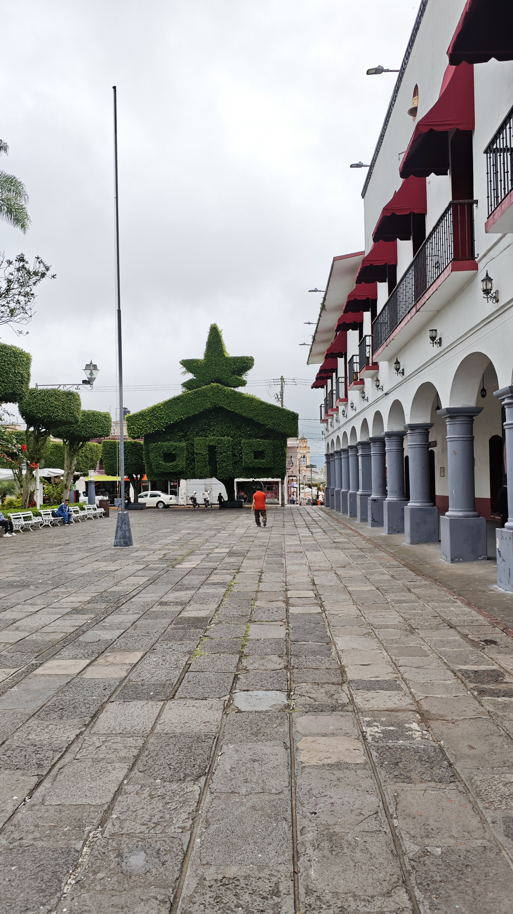
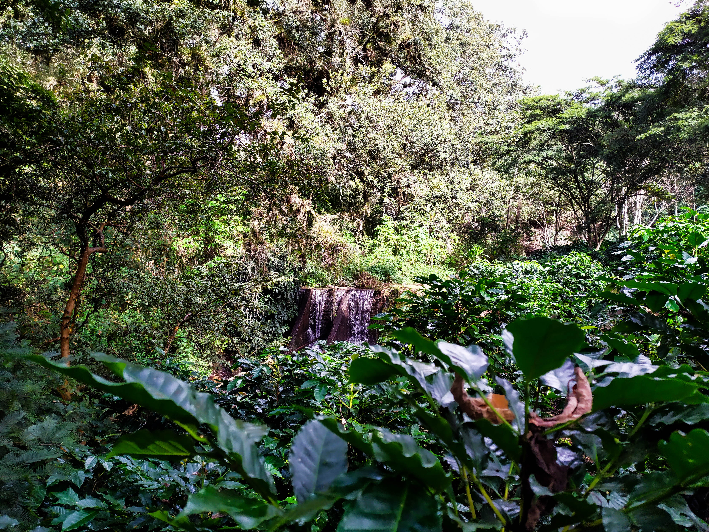
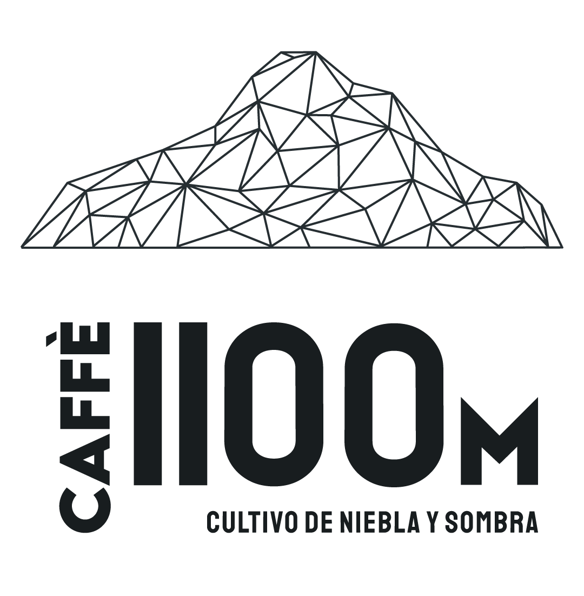
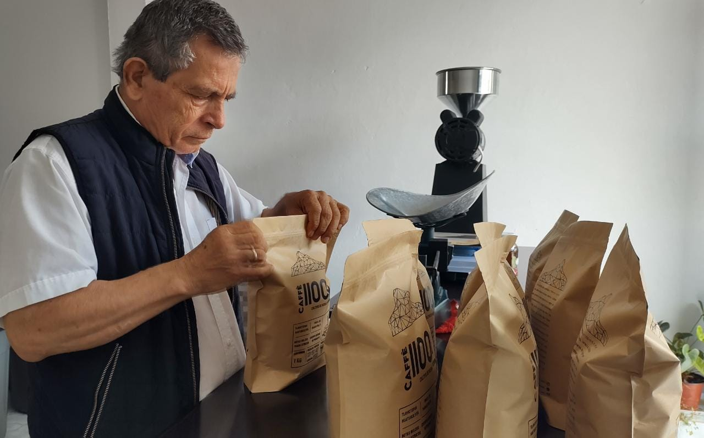
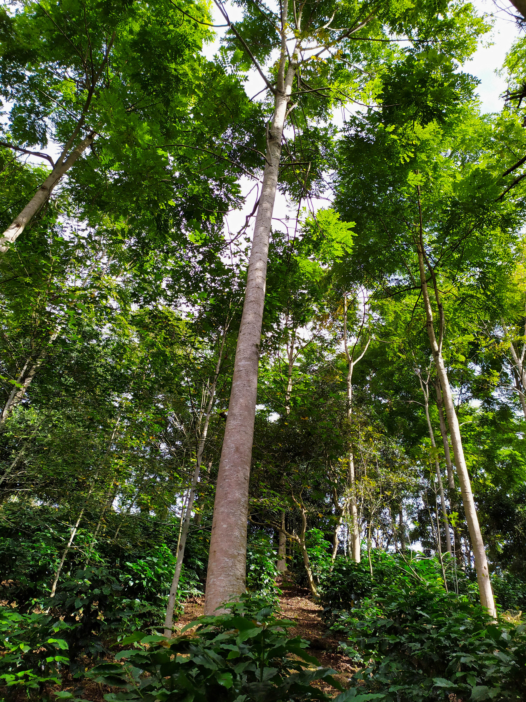
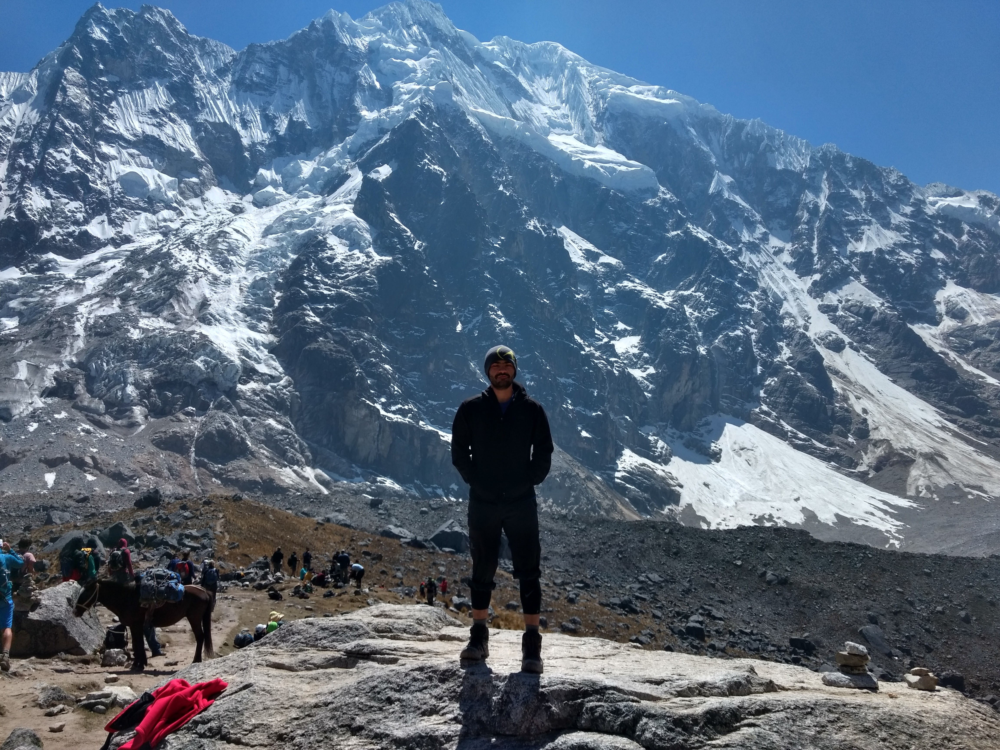

Observe first. Respect the system. Improve it carefully.
Growing up close to agriculture taught me that every result is connected to a wider environment. That perspective still guides how I approach products, materials, technologies, and teams.
Huatusco · Veracruz · Milan
I am a computational designer, engineer, climber, and founder. My path began among the coffee farms and cloud forests of Huatusco, and continues wherever complex questions invite a new way of making.

Roots at 1,100 metres
I grew up in Huatusco, Veracruz: a mountain region shaped by mist, shade-grown coffee, dense vegetation, and people who understand that quality begins with attention to place.


Growing up close to agriculture taught me that every result is connected to a wider environment. That perspective still guides how I approach products, materials, technologies, and teams.

A family project
I founded Caffè 1100m together with my father to connect our region’s coffee tradition with design, technology, and a more direct relationship between producer and customer.
The project reflects something deeply personal: progress does not need to erase craft. It can help local knowledge become more visible, resilient, and valuable.
Visit Caffè 1100m


The outdoors as a teacher
I am a climber and mountain enthusiast. Outdoors, a route is never solved by force alone: it requires observation, preparation, adaptation, trust, and the willingness to try again.
“The mountains are where curiosity becomes practical.”
I carry that mindset into design and engineering. Complex problems become routes: understand the conditions, test the next move, learn quickly, and keep progressing.

Curiosity into practice
Understand the relationships around a problem before isolating its parts.
Move between engineering, design, research, and experience without treating them as separate worlds.
Use simulation, prototypes, and experiments to turn assumptions into visible evidence.
Let curiosity lead toward challenges where established answers are no longer enough.
The journey
Nature, family, local craft, and Caffè 1100m established my connection to place and purposeful making.
Mechatronics introduced mechanics, electronics, programming, and systems thinking.
CAE, manufacturing, patents, and global product development showed how ideas survive real constraints.
Politecnico di Milano expanded engineering into meaning, interaction, research, and experience.
Simulation, parametric systems, and footwear innovation became one connected design practice.
I created a studio where this range can converge around ambitious physical and digital challenges.

The current chapter
Moon Rabbit Lab is the convergence of my origins, engineering discipline, design practice, computational research, and instinct to explore. It is where personal curiosity becomes collaborative work.